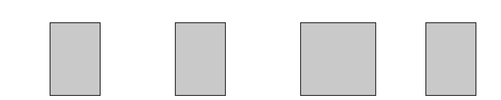
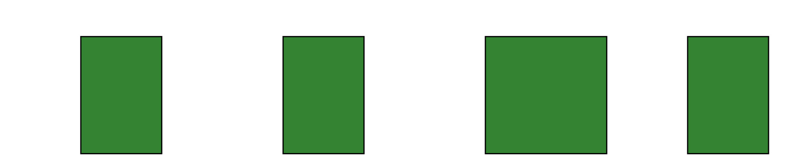
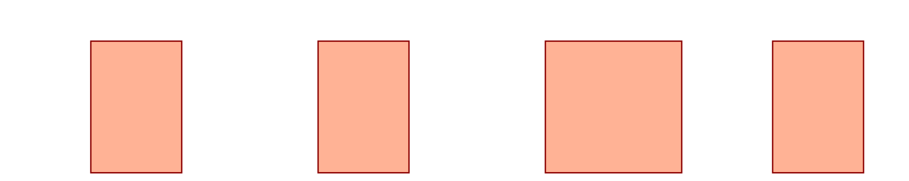
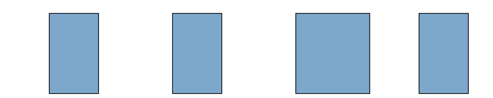
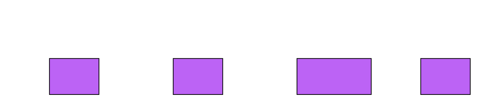
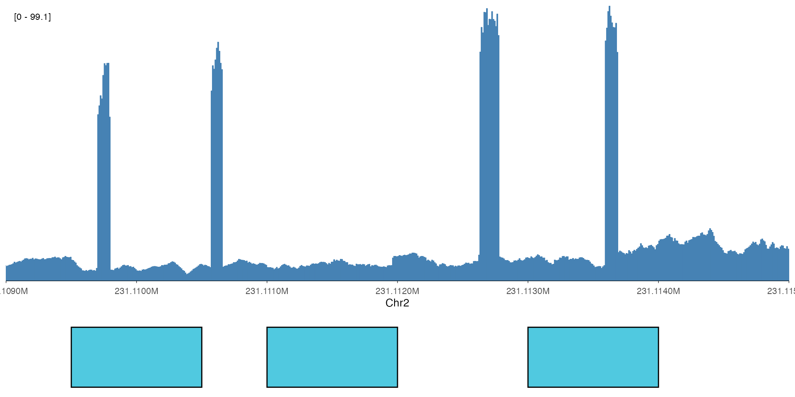
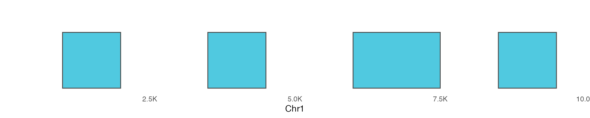

Feature tracks visualize genomic intervals such as ChIP-seq peaks,
enhancers, promoters, or any other region-based annotations. The
ez_feature() function provides a simple interface for
creating these visualizations from BED files or data frames.
Basic Usage
From a Data Frame
The simplest way to create a feature track is from a data frame with genomic coordinates.
# Create example peak data
peaks_df <- data.frame(
seqnames = "chr1",
start = c(1000, 3500, 6000, 8500),
end = c(2000, 4500, 7500, 9500),
name = c("peak1", "peak2", "peak3", "peak4"),
score = c(100, 250, 180, 320)
)
# Basic feature track
ez_feature(peaks_df, region = "chr1:1-10000")
From a BED File
You can also load features directly from a BED file.
# Load example peaks from package
bed_file <- system.file("extdata", "example_peaks.bed", package = "ezGenomeTracks")
ez_feature(bed_file, region = "chr1:1-10000")Customizing Appearance
Colors and Transparency
Customize the fill color, border color, and transparency.
ez_feature(
peaks_df,
region = "chr1:1-10000",
fill = "darkgreen",
color = "black",
alpha = 0.8
)
# Different color scheme
ez_feature(
peaks_df,
region = "chr1:1-10000",
fill = "coral",
color = "darkred",
alpha = 0.6
)
Adjusting Feature Height
Control the height of feature rectangles (0 to 1 scale).
# Taller features
ez_feature(
peaks_df,
region = "chr1:1-10000",
height = 0.9,
fill = "steelblue"
)
# Thinner features (useful when stacking with other tracks)
ez_feature(
peaks_df,
region = "chr1:1-10000",
height = 0.4,
fill = "purple"
)
Score-Based Coloring
When your features have associated scores (e.g., peak significance, enrichment), you can map scores to color intensity.
# Color by score - gradient from white to fill color
ez_feature(
peaks_df,
region = "chr1:1-10000",
use_score = TRUE,
fill = "red"
)
# Different gradient
ez_feature(
peaks_df,
region = "chr1:1-10000",
use_score = TRUE,
fill = "darkblue"
)Stacking with Other Tracks
Feature tracks are commonly used alongside coverage and gene tracks to show peak locations in genomic context.
# Load coverage data
bw_file <- system.file(
"extdata",
"avg_chr2-231091223_231109786_231113600_0.bw",
package = "ezGenomeTracks"
)
region <- "chr2:231109000-231115000"
# Create tracks
coverage_track <- ez_coverage(
bw_file,
region = region,
colors = "steelblue",
y_axis_style = "simple"
)
# Create synthetic peaks for this region
peaks_chr2 <- data.frame(
seqnames = "chr2",
start = c(231109500, 231111000, 231113000),
end = c(231110500, 231112000, 231114000),
score = c(80, 150, 120)
)
peak_track <- ez_feature(
peaks_chr2,
region = region,
use_score = TRUE,
fill = "darkred"
)
# Stack vertically (heights is relative height of second track vs first)
vstack_plot(
coverage_track,
peak_track,
region = region,
heights = c(0.3)
)
Advanced Usage
Using geom_feature() Directly
For more control, use geom_feature() directly with
ggplot2.
ggplot(peaks_df) +
geom_feature(
aes(fill = score),
height = 0.7,
color = "gray30"
) +
scale_fill_gradient(low = "lightyellow", high = "red") +
scale_x_genome_region("chr1:1-10000") +
ylim(0, 1) +
theme_minimal() +
theme(
axis.text.y = element_blank(),
axis.ticks.y = element_blank(),
panel.grid = element_blank()
) +
labs(x = "Chr1", fill = "Score")
Custom Aesthetics
Map other data columns to aesthetics.
# Add a category column
peaks_df$category <- c("promoter", "enhancer", "promoter", "enhancer")
ggplot(peaks_df) +
geom_feature(
aes(fill = category),
height = 0.7,
alpha = 0.8
) +
scale_fill_manual(values = c("promoter" = "blue", "enhancer" = "orange")) +
scale_x_genome_region("chr1:1-10000") +
ylim(0, 1) +
theme_void() +
theme(legend.position = "bottom")Tips and Best Practices
Height adjustment: When stacking multiple tracks, use smaller
heightvalues (0.3-0.5) for feature tracks to maintain visual balance.Score normalization: If scores vary widely, consider normalizing them before plotting or the color gradient may not be informative.
Region filtering: For large BED files, the function automatically filters to the specified region, but providing pre-filtered data improves performance.
Overlapping features: Features that overlap in genomic coordinates will be drawn on top of each other. Consider using transparency (
alpha) to visualize overlaps.